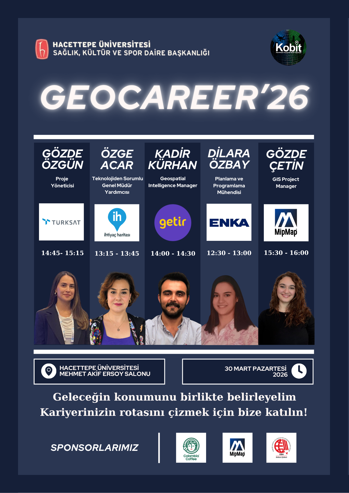

EVENT MOMENTS
GeoCareer '26 Gallery
Moments from GeoCareer '26, bringing together students, professionals and industry representatives.
EVENT & LEADERSHIP
General Coordinator · 30 March 2026

ABOUT THE EVENT
GeoCareer '26 is a career and networking event organized to bring university students together with professionals and companies in the geomatics and geospatial technologies sector. The event was designed to help students explore career opportunities, gain insights into different areas of the industry, connect directly with professionals and develop a better understanding of their future career paths. By creating a space where students and industry representatives could meet, exchange ideas and share experiences, GeoCareer '26 aimed to strengthen the connection between academic education and professional life.
MY ROLE
As the General Coordinator of GeoCareer '26, I took an active role throughout the planning and organization process of the event. My responsibilities included coordinating the organizing team, conducting sponsorship and company communications, managing speaker invitations, contributing to the event program, and overseeing organizational and logistical preparations. Throughout the process, I worked to ensure effective communication between the organizing team, participating companies and invited professionals while helping coordinate the different stages of the event from planning to implementation.
KEY RESPONSIBILITIES
Coordinating the organizing team and supporting communication throughout the event planning process.
Conducting sponsorship negotiations and maintaining communication with participating companies.
Coordinating speaker invitations and communication with invited professionals.
Contributing to program development, organizational planning and logistical preparations.
EVENT MOMENTS
Moments from GeoCareer '26, bringing together students, professionals and industry representatives.